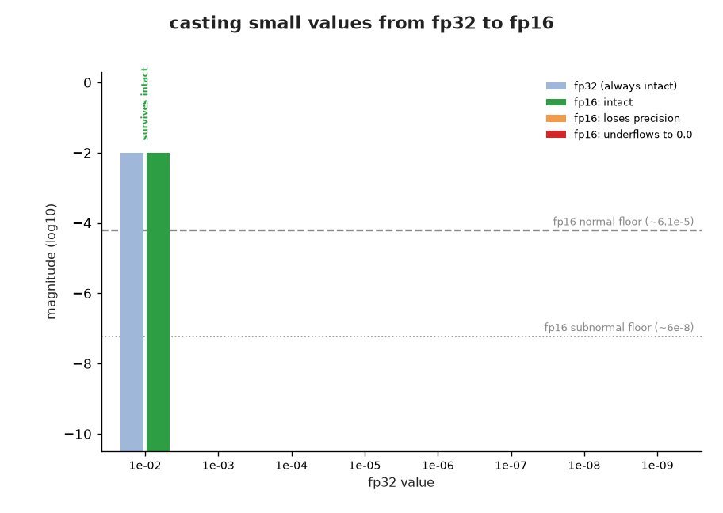
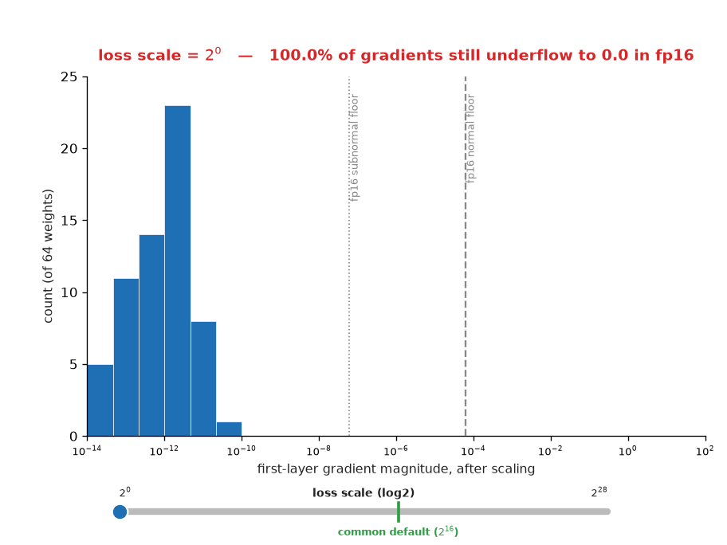
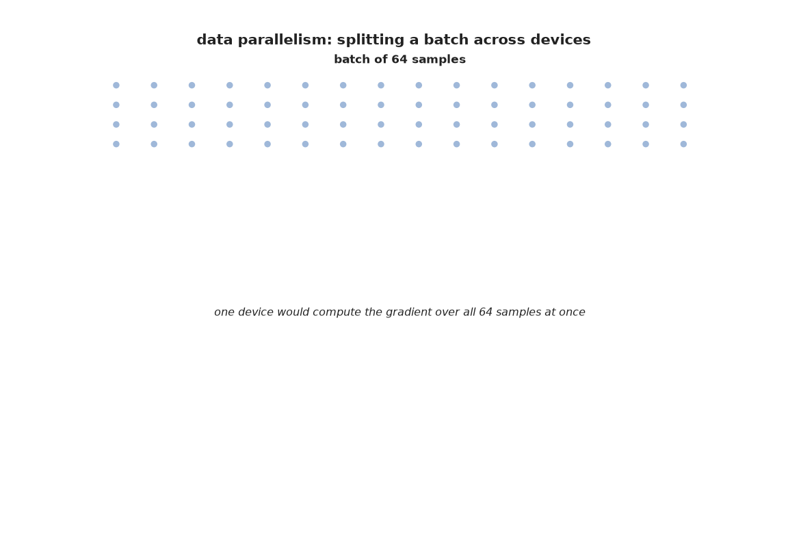
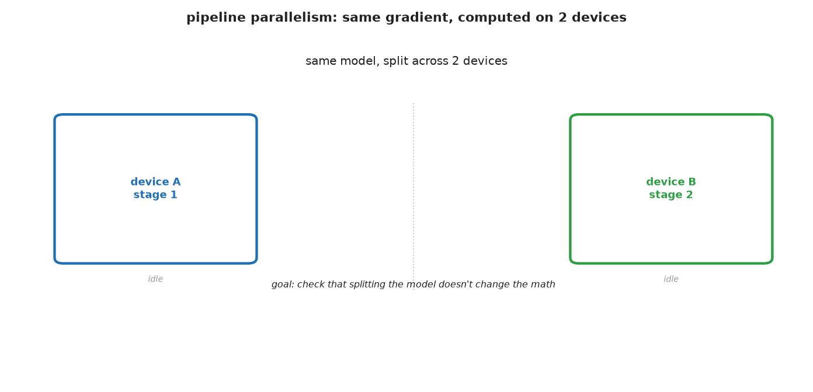

Bài 44: Độ chính xác số và Huấn luyện song song (Precision and Parallel Training)¶
Mọi mạng ở Bài 31-43 đều được huấn luyện trên một bài toán đồ chơi nhỏ, thân thiện với CPU, ở dạng số thực dấu phẩy động 32-bit mặc định (fp32), trên một tiến trình duy nhất. Các lần huấn luyện thực tế hiếm khi trông như vậy: các mô hình được huấn luyện ở độ chính xác giảm để chạy nhanh hơn và tốn ít bộ nhớ hơn, và được chia ra trên nhiều GPU vì không thiết bị đơn lẻ nào chứa nổi một mô hình hiện đại cộng với dữ liệu huấn luyện của nó. Bài này khép lại Phần 3 bằng phần kỹ thuật bên dưới cách huấn luyện thực sự diễn ra ở quy mô lớn, xây dựng từng cơ chế ở dạng thu nhỏ và đối chiếu với bản thật: độ chính xác dấu phẩy động và tại sao độ chính xác giảm cần được trợ giúp mới hoạt động được, cách khắc phục cụ thể của huấn luyện độ chính xác hỗn hợp (mixed-precision training) cho điều đó, và hai cách chia công việc trên nhiều thiết bị, song song dữ liệu (data parallelism) và song song mô hình (model parallelism).
import torch
import torch.nn as nn
import torch.nn.functional as F
import copy
import numpy as np
import matplotlib.pyplot as plt
Độ chính xác dấu phẩy động: fp32 và fp16 (Floating-point precision: fp32 vs. fp16)¶
Số thực 32-bit (fp32) và số thực 16-bit (fp16) đều dùng cùng một ý tưởng -- dấu, số mũ, phần định trị (mantissa) -- nhưng fp16 dành ít bit hơn nhiều cho số mũ, nên nó đơn giản là không thể biểu diễn các độ lớn rất nhỏ hoặc rất lớn. torch.finfo báo cáo giá trị chuẩn (normal) dương nhỏ nhất mà mỗi định dạng có thể chứa: khoảng 1.2e-38 với fp32, nhưng chỉ 6.1e-5 với fp16 (các số dưới chuẩn (subnormal) của fp16 kéo dài thêm một chút, xuống khoảng 6e-8, với cái giá là mất hoàn toàn độ chính xác). Dưới mức sàn đó, một giá trị không làm tròn thành thứ gì đó nhỏ -- nó làm tròn thành đúng bằng 0.
small_values = torch.tensor([1e-2, 1e-3, 1e-4, 1e-5, 1e-6, 1e-7, 1e-8, 1e-9], dtype=torch.float32)
small_fp16 = small_values.half()
print(f'{"fp32 value":>12} {"cast to fp16":>14} {"underflowed to 0?":>19}')
for v32, v16 in zip(small_values, small_fp16):
print(f'{v32.item():>12.1e} {v16.item():>14.1e} {str(v16.item() == 0):>19}')
Các giá trị xuống đến 1e-6 sống sót nguyên vẹn qua phép ép kiểu; 1e-7 sống sót nhưng mất độ chính xác (làm tròn thành 1.2e-7); 1e-8 và nhỏ hơn biến mất thành đúng 0.0. Đó không phải là sai số làm tròn theo nghĩa thông thường -- đó là mất mát thông tin hoàn toàn, và nó cực kỳ quan trọng với huấn luyện vì gradient thường xuyên có đúng các độ lớn này, đặc biệt trong các mạng sâu. Bài 33 và 37 đã xây dựng và nghiên cứu bài toán gradient biến mất trong fp32, nơi gradient của các lớp sớm thu nhỏ nhưng vẫn khác không. Trong fp16, "thu nhỏ" có thể nghĩa là "biến mất".
Ảnh động bên dưới lần lượt hiển thị tám giá trị này, từ lớn nhất đến nhỏ nhất, mã hóa màu xem giá trị nào sống sót nguyên vẹn qua phép ép kiểu sang fp16 (1e-2 đến 1e-6), giá trị nào sống sót nhưng mất độ chính xác (1e-7), và giá trị nào bị tràn dưới (underflow) thành đúng 0.0 (1e-8, 1e-9), so với các mức sàn biểu diễn được chuẩn và dưới chuẩn của fp16.

class DeepSigmoidNet(nn.Module):
def __init__(self, depth=12, width=16, in_dim=4):
super().__init__()
layers = []
d = in_dim
for _ in range(depth):
layers += [nn.Linear(d, width), nn.Sigmoid()]
d = width
layers += [nn.Linear(d, 1)]
self.net = nn.Sequential(*layers)
def forward(self, x):
return self.net(x)
torch.manual_seed(0)
model = DeepSigmoidNet(depth=12)
X = torch.randn(32, 4)
y = torch.randn(32, 1)
model.zero_grad()
loss = F.mse_loss(model(X), y)
loss.backward()
first_layer_grad = model.net[0].weight.grad
print(f'first-layer gradient magnitude: mean={first_layer_grad.abs().mean():.2e}, max={first_layer_grad.abs().max():.2e}')
print(f'fraction exactly zero in fp32: {(first_layer_grad == 0).float().mean():.1%}')
print(f'fraction exactly zero after casting to fp16: {(first_layer_grad.half() == 0).float().mean():.1%}')
Một mạng sigmoid 12 lớp (cố tình sâu và làm thu nhỏ đạo hàm, cùng thiết lập gradient biến mất mà Bài 37 đã chẩn đoán) tạo ra gradient lớp đầu tiên khoảng 1e-11 -- khác không một cách thoải mái trong fp32, nhưng 100% bằng 0 ngay khi được ép kiểu sang fp16. Huấn luyện trực tiếp mạng này trong fp16 và lớp đầu tiên sẽ không bao giờ được cập nhật; bộ tối ưu sẽ trung thành áp dụng một tốc độ học lên một gradient đúng bằng 0, mãi mãi. Đây là vấn đề thực sự mà huấn luyện độ chính xác hỗn hợp phải giải quyết, không phải một vấn đề giả định.
Huấn luyện độ chính xác hỗn hợp: công thức (Mixed-precision training: the recipe)¶
Huấn luyện hoàn toàn bằng fp16 đâm vào bức tường đã minh họa ở trên; huấn luyện hoàn toàn bằng fp32 thì từ bỏ lợi ích tốc độ và bộ nhớ vốn là toàn bộ mục đích. Huấn luyện độ chính xác hỗn hợp (Micikevicius et al., 2017) giữ được cả hai: lượt xuôi và lượt ngược chạy bằng fp16 để nhanh, nhưng hai biện pháp bảo vệ chống lại chính kiểu thất bại đã thấy ở trên:
- Trọng số chủ fp32 (fp32 master weights): một bản sao độ chính xác đầy đủ của mọi trọng số được giữ riêng sang một bên. Các cập nhật được áp dụng cho bản sao fp32 (nơi các cập nhật nhỏ không bị làm tròn mất), và một bản sao fp16 được suy ra lại từ nó trước mỗi lượt xuôi.
- Co giãn hàm mất mát (loss scaling): nhân hàm mất mát với một hằng số lớn trước khi gọi
.backward(). Vì gradient tuyến tính theo hàm mất mát, mọi gradient đều được phóng lên cùng một hệ số -- đẩy các giá trị lẽ ra đã bị tràn dưới trở lại khoảng biểu diễn được của fp16. Bước cập nhật chia gradient xuống lại đúng hệ số đó trước khi áp dụng, nên phép toán không bị ảnh hưởng gì khác.
torch.manual_seed(0)
model = DeepSigmoidNet(depth=12)
X = torch.randn(32, 4)
y = torch.randn(32, 1)
print(f'{"loss scale":>12} {"fraction of fp16 grads still zero":>34}')
for scale in [1.0, 65536.0, 2**20, 2**24, 2**28]:
model.zero_grad()
loss = F.mse_loss(model(X), y)
(loss * scale).backward() # every gradient in the graph is scaled by `scale`, exactly
grad_fp16 = model.net[0].weight.grad.half()
print(f'{scale:>12.0f} {float((grad_fp16 == 0).float().mean()):>33.1%}')
Khi không co giãn (scale=1), mọi gradient lớp đầu tiên đều bị tràn dưới, y như trước. Co giãn theo $2^{16}$ (65536, một giá trị mặc định phổ biến trong thực tế) đã cứu được phần lớn chúng, nhưng hơn một phần ba vẫn đủ nhỏ để biến mất. Chỉ ở $2^{28}$ thì gradient cuối cùng mới vượt qua mức sàn của fp16. Đây chính là lý do các cài đặt thực tế (torch.cuda.amp.GradScaler của PyTorch) dùng co giãn hàm mất mát động thay vì một hằng số cố định: bắt đầu với một hệ số nào đó, và tăng nó lên thêm mỗi khi một bước hoàn thành mà không tạo ra inf/NaN (dấu hiệu cho thấy hệ số có thể an toàn lớn hơn), hoặc lùi lại mỗi khi xuất hiện một giá trị như vậy (dấu hiệu cho thấy hệ số đã làm tràn trên thứ gì đó). Thêm một chi tiết đáng nêu tên: bfloat16 (bf16), một phương án thay thế fp16 ngày càng phổ biến, né tránh hoàn toàn việc co giãn hàm mất mát -- torch.finfo cho thấy nó có cùng khoảng số mũ với fp32 (smallest_normal khoảng 1.2e-38 cho cả hai), nên nó không thể bị tràn dưới như fp16. Thứ nó từ bỏ thay vào đó là độ chính xác (eps khoảng 0.008 với bf16 so với 0.001 với fp16) -- một sự đánh đổi khác trên cùng trục tốc-độ-so-với-khoảng-biểu-diễn-được, không phải bữa trưa miễn phí.
Ảnh động bên dưới quét hệ số co giãn hàm mất mát một cách mượt mà từ $2^0$ lên tới $2^{28}$, cho thấy phân phối độ lớn gradient lớp đầu tiên dịch chuyển vượt qua mức sàn biểu diễn được của fp16 khi hệ số tăng, với một thanh trượt theo dõi hệ số hiện tại và một vạch cố định tại giá trị mặc định phổ biến trong thực tế là $2^{16}$ (65536).

Song song dữ liệu: tính đúng đắn được chứng minh ở dạng thu nhỏ (Data parallelism: correctness proven in miniature)¶
Độ chính xác điều khiển lượng công việc một thiết bị làm mỗi bước; song song hóa điều khiển bao nhiêu thiết bị chia sẻ công việc đó. Song song dữ liệu (công thức tiêu chuẩn đằng sau huấn luyện lô lớn, ví dụ Goyal et al., 2017) chia một lô thành các mảnh (shard), chạy một bản sao giống hệt của mô hình trên mỗi mảnh trên thiết bị riêng của nó, và lấy trung bình các gradient thu được trước bước cập nhật. Trên một CPU thì không có tăng tốc nào để cho thấy, nhưng tính đúng đắn của công thức đó -- rằng lấy trung bình các gradient theo từng mảnh cho ra cùng đáp án như tính gradient trên toàn bộ lô cùng lúc -- thì kiểm tra được chính xác, vì hàm mất mát MSE tự nó là một phép trung bình, và gradient của trung bình các trung bình theo từng mảnh chính là trung bình các gradient theo từng mảnh.
torch.manual_seed(1)
model = nn.Sequential(nn.Linear(8, 16), nn.ReLU(), nn.Linear(16, 1))
X = torch.randn(64, 8)
y = torch.randn(64, 1)
# "one device": gradient over the whole batch at once
model.zero_grad()
F.mse_loss(model(X), y).backward()
grad_single_device = [p.grad.clone() for p in model.parameters()]
# "data parallel, 4 shards": an identical model copy per shard, each computing its own
# gradient independently; only the gradients get communicated and averaged, never the data
n_shards = 4
shard_size = len(X) // n_shards
per_shard_grads = []
for s in range(n_shards):
shard_model = copy.deepcopy(model)
shard_model.zero_grad()
xs, ys = X[s * shard_size:(s + 1) * shard_size], y[s * shard_size:(s + 1) * shard_size]
F.mse_loss(shard_model(xs), ys).backward()
per_shard_grads.append([p.grad.clone() for p in shard_model.parameters()])
averaged_grad = [sum(shard[i] for shard in per_shard_grads) / n_shards for i in range(len(grad_single_device))]
print(f'{"parameter":>10} {"max abs diff: single-device vs. averaged-shard grad":>52}')
for i, (g_single, g_avg) in enumerate(zip(grad_single_device, averaged_grad)):
print(f'{i:>10} {(g_single - g_avg).abs().max().item():>52.2e}')
Gradient trung bình theo mảnh của mọi tham số đều khớp với gradient trên một thiết bị trong phạm vi sai số làm tròn dấu phẩy động (~1e-8, không phải sai khác thực sự). Đây là toàn bộ lập luận về tính đúng đắn của song song dữ liệu chỉ trong một ví dụ: chia lô rồi lấy trung bình sau đó về mặt toán học là cùng phép tính với việc không bao giờ chia nó. Điều mà phiên bản đồ chơi này không -- không thể -- cho thấy là cái giá thực sự mà huấn luyện song song dữ liệu thực tế phải trả: all-reduce, bước giao tiếp cộng/lấy trung bình gradient trên mọi thiết bị trước khi bất kỳ thiết bị nào có thể tiến tới bước cập nhật. Ở quy mô nhỏ, giao tiếp đó gần như miễn phí; ở hàng trăm GPU, nó có thể chiếm phần lớn thời gian của mỗi bước, đó là lý do huấn luyện quy mô lớn tốn công sức kỹ thuật thực sự để chồng lấn giao tiếp với tính toán thay vì làm chúng lần lượt.
Ảnh động bên dưới minh họa: lô được chia thành 4 mảnh, mỗi thiết bị một mảnh, mỗi thiết bị tự tính gradient của riêng mình một cách độc lập, các gradient theo từng thiết bị hội tụ thành một trung bình, và trung bình đó được so sánh với gradient thực trên một thiết bị.

Song song mô hình: chuyển giá trị kích hoạt qua một ranh giới (Model parallelism: shipping activations across a boundary)¶
Song song dữ liệu sao chép toàn bộ mô hình lên mọi thiết bị và chia dữ liệu. Song song mô hình (Shoeybi et al., 2019) làm điều ngược lại: chia chính mô hình ra trên các thiết bị, vì nó quá lớn để vừa một thiết bị. Ở dạng đơn giản nhất (song song đường ống — pipeline parallelism), mỗi thiết bị giữ một khối lớp liền kề; lượt xuôi tính đầu ra của một khối, chuyển giá trị kích hoạt đó qua ranh giới thiết bị, và thiết bị tiếp theo tiếp nhận từ đó. Lượt ngược chạy cùng sự chuyển giao đó theo chiều ngược lại: mỗi thiết bị chỉ cần gradient của hàm mất mát theo giá trị kích hoạt mà nó đã gửi đi, không cần biết gì về những gì xảy ra ở phía bên kia ranh giới.
class TwoStageNet(nn.Module):
def __init__(self):
super().__init__()
self.stage1 = nn.Sequential(nn.Linear(8, 16), nn.ReLU(), nn.Linear(16, 16), nn.ReLU())
self.stage2 = nn.Sequential(nn.Linear(16, 16), nn.ReLU(), nn.Linear(16, 1))
def forward(self, x):
return self.stage2(self.stage1(x))
torch.manual_seed(2)
whole_model = TwoStageNet()
X = torch.randn(8, 8)
y = torch.randn(8, 1)
# "one device": run the whole model, one backward pass, end to end
F.mse_loss(whole_model(X), y).backward()
grad_whole = [p.grad.clone() for p in whole_model.parameters()]
# "two devices": stage1 on device A, stage2 on device B, with the activation manually
# shipped across the boundary in each direction
torch.manual_seed(2)
split_model = TwoStageNet()
split_model.zero_grad()
activation_out = split_model.stage1(X) # entirely on "device A"
activation_in = activation_out.detach().requires_grad_(True) # crosses the boundary
prediction = split_model.stage2(activation_in) # entirely on "device B"
F.mse_loss(prediction, y).backward() # backprop stops at the boundary
activation_grad = activation_in.grad # shipped back across the boundary
activation_out.backward(activation_grad) # resumes backprop into stage1
grad_split = [p.grad.clone() for p in split_model.parameters()]
print(f'{"parameter":>10} {"max abs diff: whole model vs. split across 2 stages":>52}')
for i, (g_whole, g_split) in enumerate(zip(grad_whole, grad_split)):
print(f'{i:>10} {(g_whole - g_split).abs().max().item():>52.2e}')
Mọi gradient đều khớp chính xác -- khác biệt 0.0, không chỉ sai số làm tròn, vì cơ chế chia-và-gắn-lại (detach() tại ranh giới khi đi xuôi, rồi tự tay tiếp tục .backward() với gradient được gửi trở lại) về mặt toán học giống hệt autograd lần theo thẳng qua một mô hình không bị chia; nó chỉ làm cho "ranh giới thiết bị" trở nên tường minh như một nơi các giá trị kích hoạt bị tách ra và các gradient được gắn lại bằng tay thay vì tự động.
Song song đường ống thực tế bổ sung thêm một mối quan tâm mà ví dụ đồ chơi hai thiết bị, một lô này né tránh hoàn toàn: trong khi thiết bị B làm phần đuôi của đường ống cho một lô, thiết bị A ngồi chơi trừ khi một lô thứ hai đã chảy vào phía sau nó — "bong bóng đường ống (pipeline bubble)" mà các cài đặt thực tế phải chống lại bằng việc lập lịch cẩn thận (chia mỗi lô thành các vi lô (microbatch) nhỏ hơn để mọi giai đoạn đều bận rộn). Nút thắt cổ chai của song song dữ liệu là giao tiếp (all-reduce ở trên); của song song mô hình là thời gian rảnh rỗi.
Ảnh động này cho thấy cùng cơ chế chia-và-gắn-lại đó, với mỗi thiết bị được vẽ đặc khi đang tính toán và rỗng khi đang rảnh: thiết bị A ngồi chơi suốt thời gian thiết bị B làm việc, và ngược lại. Đó là bức tranh trung thực cho một lô duy nhất: ví dụ này tồn tại để kiểm tra phép toán (gradient chia == gradient không chia), không phải để cho thấy tăng tốc. Song song đường ống thực tế chồng lấn nhiều vi lô để luôn có một giai đoạn nào đó bận rộn.

Thêm hai mẹo thực tế (Two more practical tricks)¶
Hai kỹ thuật nữa hoàn thiện bức tranh thực tế mà không cần ví dụ minh họa đầy đủ riêng, vì cả hai đều là phần mở rộng tự nhiên của các cơ chế đã xây dựng ở trên:
- Tích lũy gradient (gradient accumulation) mô phỏng một lô lớn hơn mức bộ nhớ chứa được bằng cách chạy vài lượt xuôi/ngược nhỏ mà không có bước tối ưu xen giữa, cộng dồn gradient của chúng, rồi mới cập nhật -- về mặt toán học là cùng ý tưởng lấy trung bình như các mảnh song song dữ liệu ở trên, chỉ là trải ra theo thời gian trên một thiết bị thay vì trên nhiều thiết bị cùng lúc.
- Điểm kiểm tra gradient (gradient checkpointing) đánh đổi tính toán lấy bộ nhớ: thay vì lưu mọi giá trị kích hoạt trung gian cho lượt ngược (điều autograd thường làm), nó chỉ lưu một nhúm điểm kiểm tra và tính lại các giá trị kích hoạt ở giữa trong lượt ngược. Nhiều tính toán lượt xuôi hơn, ít bộ nhớ hơn nhiều -- hữu ích khi chính các giá trị kích hoạt của mô hình, chứ không phải trọng số của nó, mới là thứ không vừa.
Bài tập (Exercises)¶
- Trong ví dụ tràn dưới fp16, đổi
depthcủaDeepSigmoidNettừ 12 xuống 4. Gradient lớp đầu tiên có còn bị tràn dưới hoàn toàn trong fp16 không? Liên hệ câu trả lời với phần thảo luận ở Bài 37 về lý do độ sâu và hàm kích hoạt sigmoid cùng nhau gây ra gradient biến mất. - Bảng co giãn hàm mất mát dừng ở
scale=2**28. Hãy tiếp tục tăng hệ số (thử2**32,2**40) -- đến mức nào thì chính gradient đã co giãn bắt đầu có nguy cơ tràn trên khỏi giá trịmax65504của fp16 thay vì tràn dưới? Điều đó ngụ ý gì về lý do co giãn hàm mất mát động cần tìm kiếm một hệ số, thay vì luôn dùng hệ số lớn nhất có thể? - Đổi
n_shardstrong ví dụ song song dữ liệu từ 4 thành 3, với kích thước lô không chia hết (thử 65). Gradient trung bình theo mảnh có còn khớp chính xác với gradient trên một thiết bị không, hay sự sai khác tiết lộ điều gì đó về cách huấn luyện song song dữ liệu thực tế xử lý các mảnh có kích thước không đều? - Thêm một giai đoạn thứ ba vào
TwoStageNet(ba khốinn.Sequentialthay vì hai) và mở rộng sự chuyển giao xuôi/ngược thủ công sang ba thiết bị. Gradient có còn khớp chính xác với một lượt ngược trên toàn mô hình không?